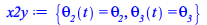
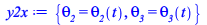
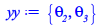
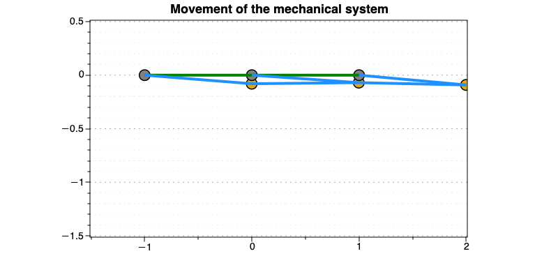
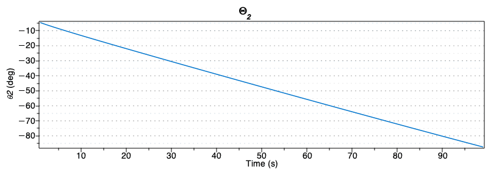
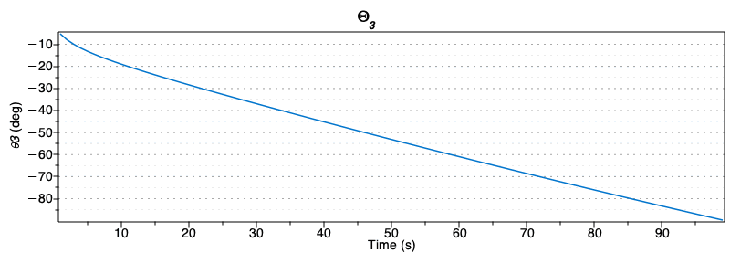

Kinematic Numerical Solution
This section aims at finding the numerical solutions of the mechanical system for given values of the independent variables.
Then the movement of the mechanical system is displayed and also the values of the dipendent variables (theta2,theta3) are plotted.
| > | x2y := {seq(qD_vars[i]=op(0,qD_vars[i]),i=1..nops(qD_vars))};
y2x := map(x->rhs(x)=lhs(x),x2y); yy := map(lhs,y2x); |
|  | |
|  | |
|  | (4.1.2.1) |
| > | NPTS := 100:
qI_vec := [seq(s__2(t) = 0.002+0.08/NPTS*i,i=0..NPTS),seq(s__3(t) = 0.002+0.28/NPTS*i,i=0..NPTS),seq(theta__1(t) = -0.04-1.5/NPTS*i,i=0..NPTS)]: # vector of independent variable's values |
| > | sol_kine_num := Array(1..NPTS+1,[]): # vector to store the solution
#first solution sol_kine_num[1] := subs( y2x, fsolve(convert(subs(data,qI_vec[1],qI_vec[102],qI_vec[204],theta__2(t)=theta__2,theta__3(t)=theta__3,x2y, Phi),set),yy, {theta__2 = -Pi/2..Pi/2,theta__3 = -Pi/2..Pi/2}) ): #cycle over the vector of positions of independent variables and store di solution for k from 2 to NPTS do sol_kine_num[k] := subs( y2x, fsolve(convert(subs(data,qI_vec[k],qI_vec[101+k],qI_vec[203+k],theta__2(t)=theta__2,theta__3(t)=theta__3,x2y, Phi),set), subs(x2y,sol_kine_num[k-1]), {theta__2 = -Pi/2..Pi/2,theta__3 = -Pi/2..Pi/2} # add the ranges to search the solution ) ); end do: |
| > | anim_draw_mech_k := proc(data, sol_kine, dof::list, k)
draw_mech(data, sol_kine[k], [dof[k],dof[k+101],dof[k+204]]); end proc: animate(anim_draw_mech_k,[data,sol_kine_num, qI_vec,K], K=[seq(k,k=1..(NPTS-1))], size=[800,400], view=[-1.5..2,0.5..-1.5], title = "Movement of the mechanical system") |
|  |
Plot the values found for the dipendent variables
| > | pointplot([seq(k,k=1..99)],[seq(subs(sol_kine_num[k],theta__2(t)*180/Pi),k=1..99)],
connect = true, color = c_set[1], labels = ["Time (s)", typeset(theta2, " (deg)") ], title = Theta__2, size = [800,300] ); pointplot([seq(k,k=1..99)],[seq(subs(sol_kine_num[k],theta__3(t)*180/Pi),k=1..99)], connect = true, color = c_set[1], labels = ["Time (s)", typeset(theta3, " (deg)") ], title = Theta__3, size = [800,300] ); |
|  | |
|  |